Chapter 7 Partial Least Squares - Correlation
7.1 Description
PLS is used to find the fundamental relations between two matrices (X and Y), i.e. a latent variable approach to modeling the covariance structures in these two spaces. A PLS model will try to find the multidimensional direction in the X space that explains the maximum multidimensional variance direction in the Y space. PLS regression is particularly suited when the matrix of predictors has more variables than observations, and when there is multicollinearity among X values. PLS bears some relation to principal components regression; instead of finding hyperplanes of maximum variance between the response and independent variables, it finds a linear regression model by projecting the predicted variables and the observable variables to a new space. Because both the X and Y data are projected to new spaces, the PLS family of methods are known as bilinear factor models.
7.2 Correlation Plot
Visually analyze multicollinearity between all varaibles in Rain and Temperature tables.
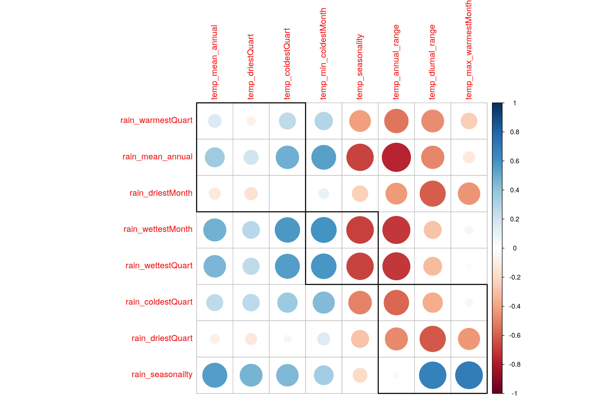
7.3 PLS-C
## ------------------------------------------------------------------------------
## Results of Permutation Test for PLSC of X'*Y = R
## for Omnibus Inertia and Eigenvalues
## ------------------------------------------------------------------------------
## $ fixedInertia the Inertia of Matrix X
## $ fixedEigenvalues an L*1 vector of the eigenvalues of X
## $ pOmnibus the probablity associated to the Inertia
## $ pEigenvalues an L* 1 matrix of p for the eigenvalues of X
## $ permInertia vector of the permuted Inertia of X
## $ permEigenvalues matrix of the permuted eigenvalues of X
## ------------------------------------------------------------------------------Now we have Latent Variables and Saliences. * Latent Variables are the new Data points w.r.t. correlation between both the tables. Latent Variables exists for each table. * Saliences represent correlation between variables of each table.
7.4 Scree Plot
Gives amount of information explained by corresponding component. Gives an intuition to decide which components best represent data in order to answer the research question.
P.S. The most contribution component may not always be most useful for a given research question.
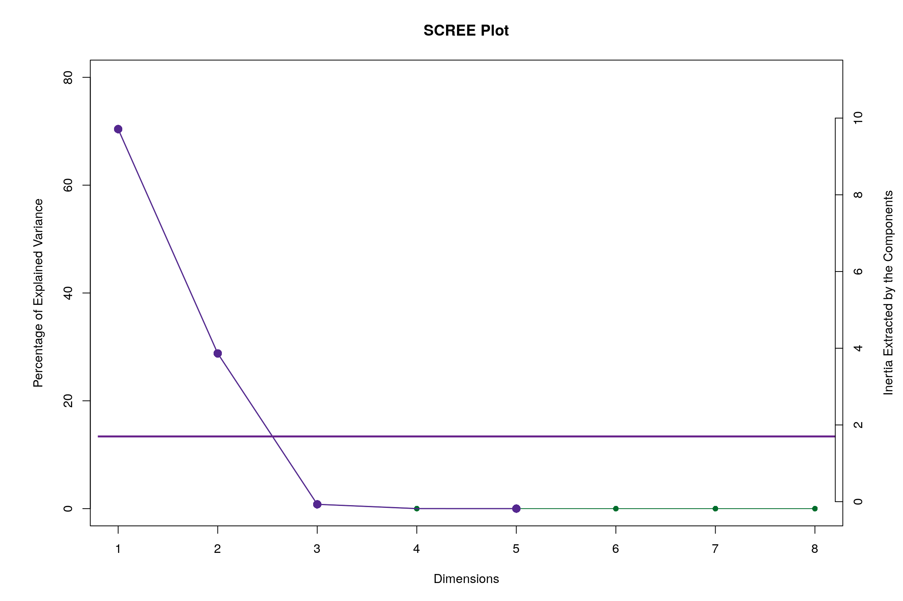
7.5 Latent Variables
Lets visualize happiness categories for Components 1 of each table
7.5.1 Component 1 for both Tables: Rain and Temperature
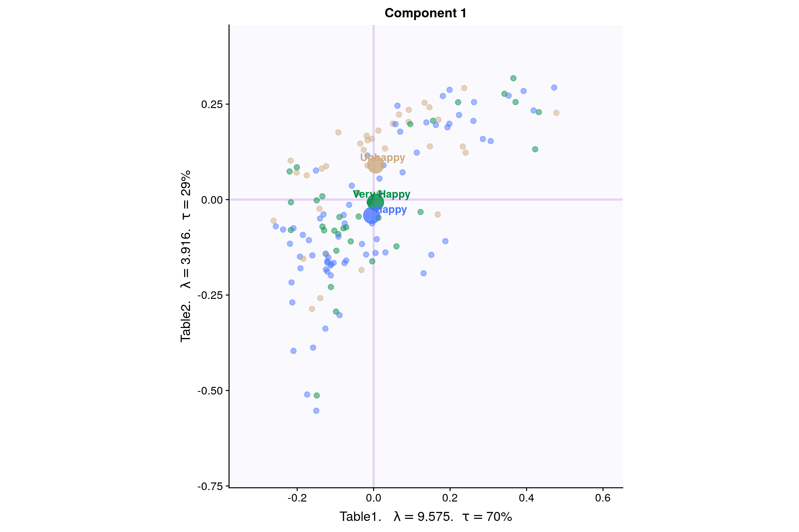
7.5.2 Component 2 for both Tables: Rain and Temperature
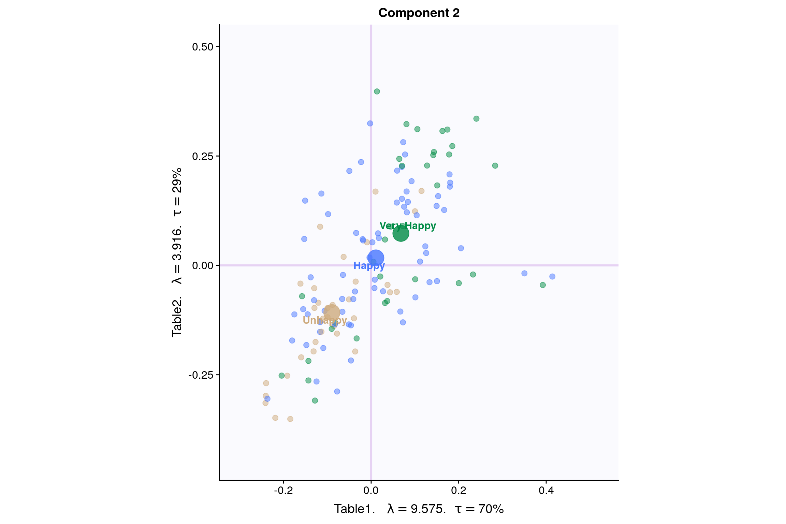
7.6 Salience for Rain
7.6.1 Components 1
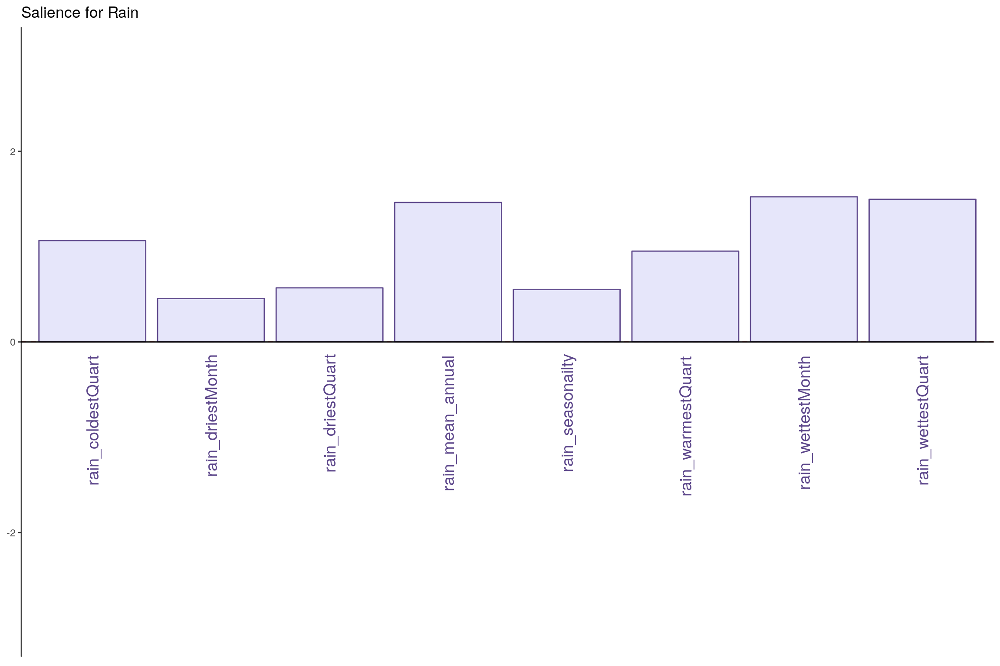
7.6.2 Component 2
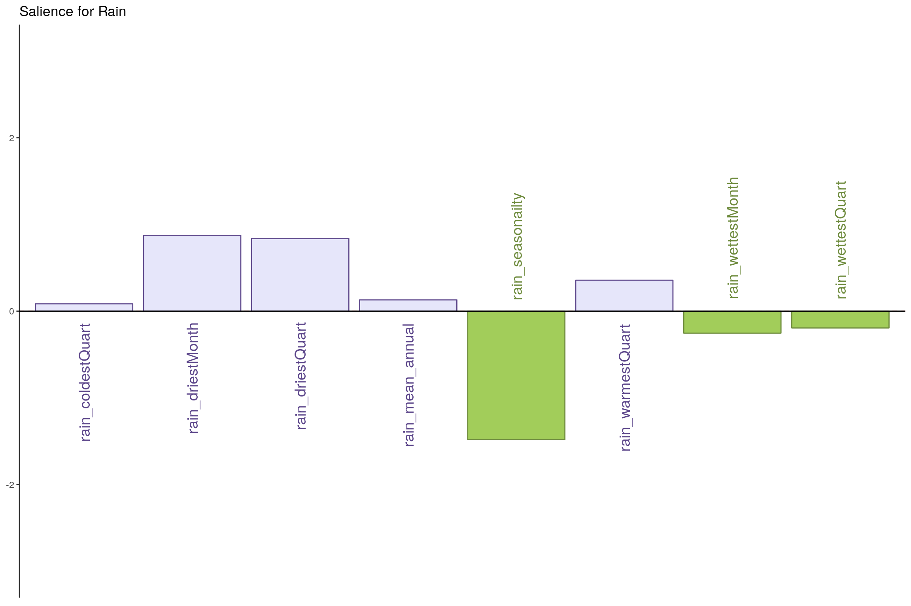
7.7 Salience for Temperature
7.7.1 Component 1
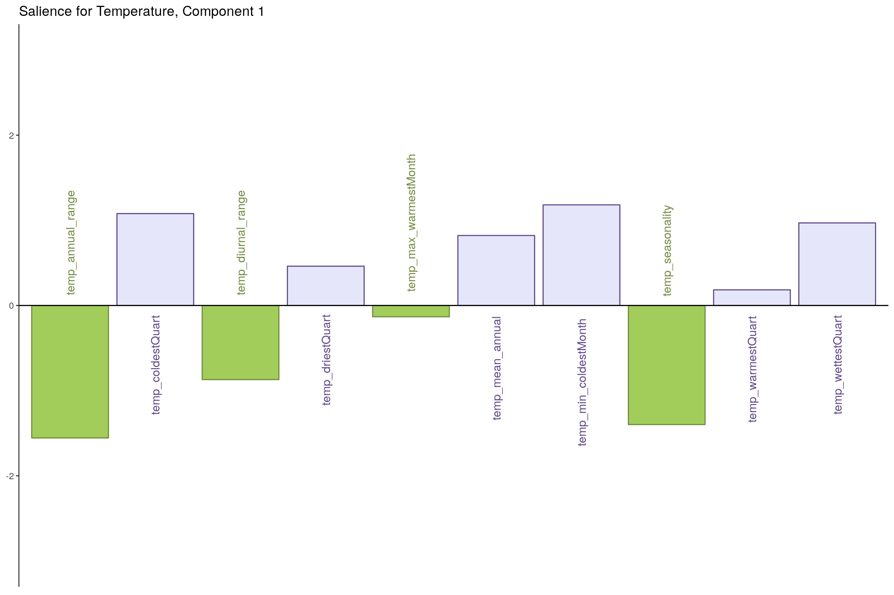
7.7.2 Component 2
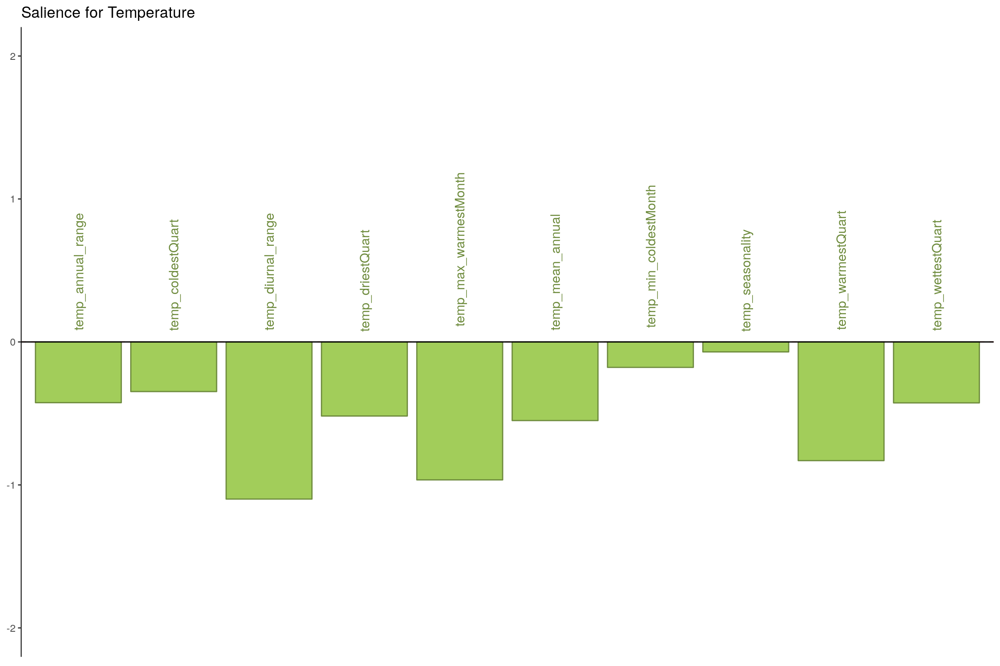
7.8 Most Contributing Variables - PLS-C (with Inference)
## ------------------------------------------------------------------------------
## Bootstraped Factor Scores (BFS) and Bootstrap Ratios (BR)
## for the I and J-sets of a PLSC (obtained from multinomial resampling of X & Y)
## ------------------------------------------------------------------------------
## $ bootstrapBrick.i an I*L*nIter Brick of BFSs for the I-Set
## $ bootRatios.i an I*L matrix of BRs for the I-Set
## $ bootRatiosSignificant.i an I*L logical matrix for significance of the I-Set
## $ bootstrapBrick.j a J*L*nIter Brick of BFSs for the J-Set
## $ bootRatios.j a J*L matrix of BRs for the J-Set
## $ bootRatiosSignificant.j a J*L logical matrix for significance of the J-Set
## ------------------------------------------------------------------------------7.8.1 Bootstrap Test
- Rain - Component 1
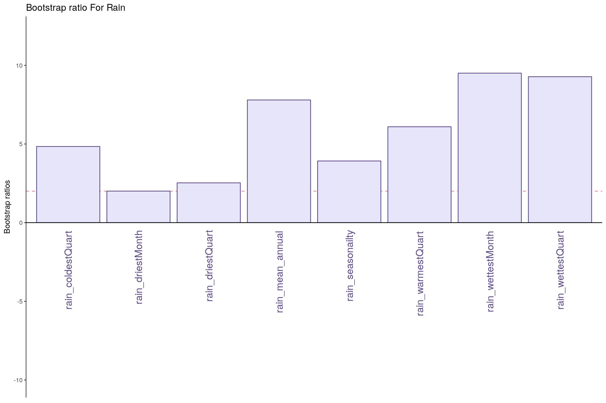
- Rain - Component 2
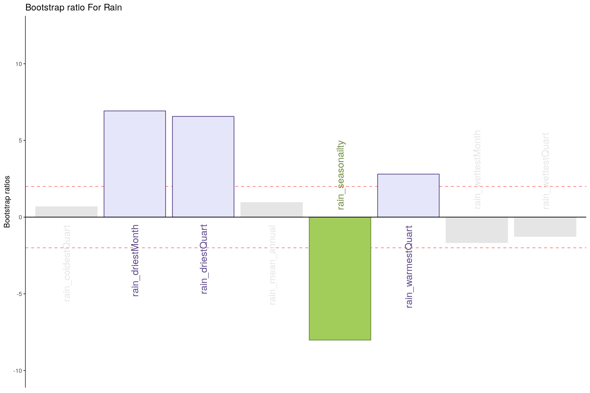
- Temperature - Component 1
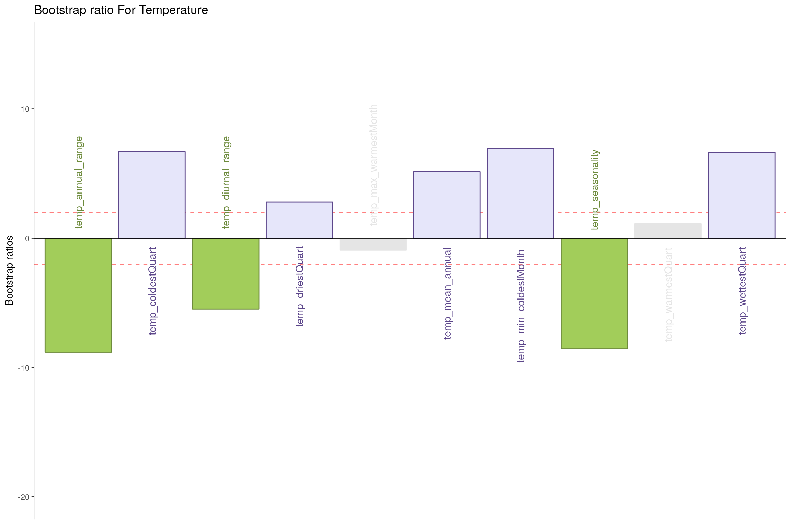
- Temperature - Component 2
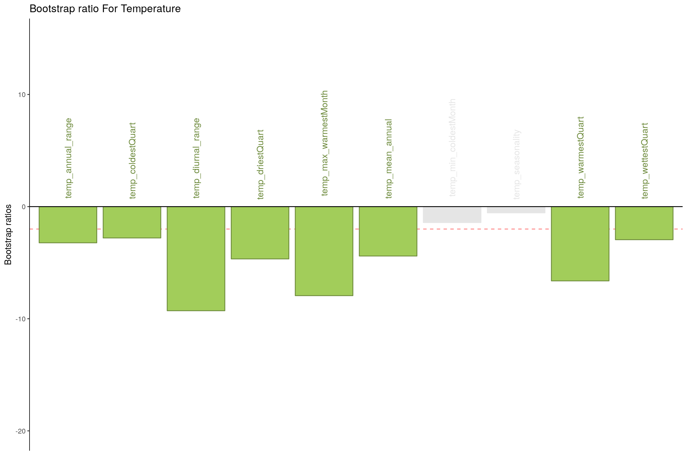
7.9 Conclusion
Here Component 2 seems to best seperate Happiness levels. Let’s compare Component 2 for both tables.
- Table 1 & 2 Component 2
- Latent Variables: Very Happy vs Unhappy (for Rain and Temperature both)
- Salience:
- Rain: It seems dryness and wetness at a montly scale have more effect than coldness or yearly patterns.
- Temperature: All temperature variations at a monthly and yearly scale seems to impact happiness.